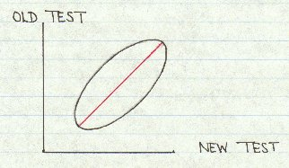
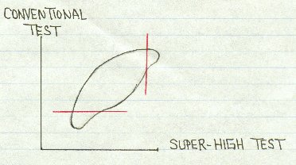
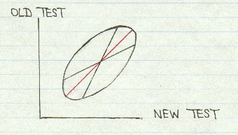

by Grady M. Towers
Published posthumously
from a letter to me dated March 7, 2000
Grady wrote: "This is the most important psychometric insight I've ever had. I hope you will post it on your site."
When one ordinary IQ test is normed against another, the scatter diagram of their score pairs from an ellipse like this:

The objective in norming one test against another is to find the line of equivalents shown here in red. This can be presented as an equation or as a table of equivalent scores. The two classical ways of finding this line are to equate by normalized scores -- equating means and standard deviations -- or equating by smoothed percentiles. (I personally believe that equating by smoothed percentiles gives sloppy results unless the sample size is extremely large.)
Unfortunately, when norming a super-high IQ test against one or more conventional IQ tests, one runs into the problem of ceiling and floor bumping: older, more conventional tests will have insufficient top, and the new super-high IQ test will have insufficient bottom. Theoretically, that should distort the ellipse like this, although in practice this is often hard to see with the naked eye:

Obviously, the line of equivalents will be distorted, and obviously the solution to the norming problem is to discard the distorting data at the top and bottom of the scatter diagram, but only the distorting data. In other words, the data to the right and below the red lines should be discarded, leaving only the valid (approximate) ellipse. The question is, How do we know where to draw the lines? Here's my solution.
When data pairs really do form an ellipse, one can calculate two linear regression equations that go with the associated correlation coefficient. One regression equation uses new test scores to estimate probable old test scores (x predicts y), and a second linear regression equation that uses old test scores to estimate probable new test scores (y predicts x). This is shown in the following diagram.

This diagram shows two things. First, it shows that least-squares regression equations can't be used to norm tests. And second, it shows that the line of equivalents falls exactly midway between the two linear regression lines. But the best fitting regression line is not always linear. Sometimes it's a least-squares parabola, or least-squares cubic, or some other least-squares equation. It's pretty obvious that when test score data have been distorted by ceiling or floor bumping, the best fitting regression lines will also be distorted into something non-linear. And if one or both of the least-square regression lines are distorted, then the line of equivalents must also be distorted. This furnishes a method for detecting data distortion due to ceiling or floor bumping.
There is a statistical technique called a correlation ratio that can be modified to tell if the best fitting regression line is linear or should have some other shape. If both regression lines are linear, then all the distorting data have been eliminated and the classical methods for test norming are appropriate. If not, then data need to be discarded a few at a time until they are. Then equate by normalized scores.
This method is tedious and time-consuming but it works.
For those who wish to learn how to test regression equations for non-linearity, see equation 15.20 in the first edition of Ferguson's Statistical Analysis in Psychology and Education. Also see equation 14.6 in Fundamental Statistics in Psychology and Education, fourth edition, by J.P. Guilford. Unfortunately, not all statistics textboods include the test for non-linearity in their explanation fo correlation ratios. These two sources do.
Return to the Uncommonly Difficult I.Q. Tests Page